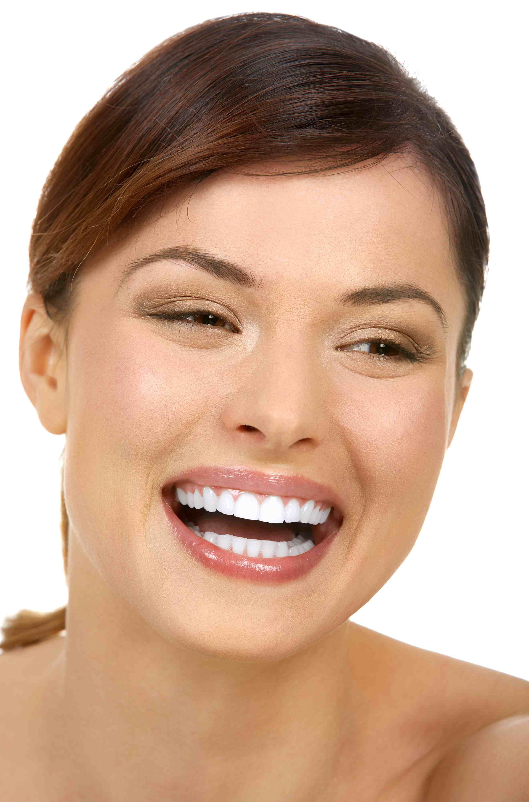
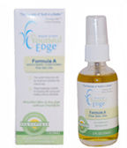
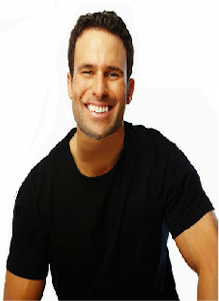
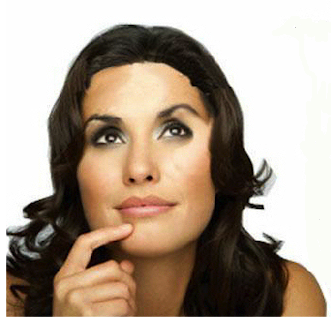
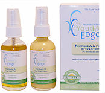

Alexander De Medici - The Youthful Edge
-

"The cosmetics industry has an ugly problem: make-up, shampoos, and lotions are contaminated with toxic chemicals that harm health."
"-- Janet Nudelman of the Campaign for Safe Cosmetics."
How is The Youthful Edge™ Different from Other Skin Products?
Product A, Argan Plus™, contains the world's finest natural skin oils and nature's richest source of antioxidants, vitamins and minerals that have been used for beautiful skin around the world for thousands of years without toxic chemicals.
Product B, The Gold Lotion, is applied to mature, damaged or wrinkled skin after applying Product A . This product contains five of the most potent natural anti-wrinkle ingredients that are often found individually in products costing over $100 each--plus honeybee superfood ingredients for the skin that are rich in antioxidants, vitamins and minerals.
No Chemicals. No Mineral Oil. No Parabens. No Petroleum Byproducts
© 2013 The Youthful Edge™, Inc.
-

A recent study (Bionsen, UK) found that the average woman can put up to over 500 toxic chemicals on her skin a day from lotions, perfumes, mascara, shampoos, makeup and other skin products, a toxic brew of chemicals that can cause cancer and a wide range of other serious health problems.
Single Pack
The Youthful Edge™Formula A
Fine Oils: Moisturizer/Conditioner
Argan Plus™Now children, teenagers and adults alike can use the finest natural skin oils in the world, all working together to moisturize, condition and help keep their skin young and beautiful without toxic chemicals:
INGREDIENTS
Argan Oil,Sesame Seed Oil, Safflower Seed Oil, Extra Virgin Olive Oil, Grapeseed Oil, Coconut Oil, Avocado Oil, Rose Hip Oil, Flax Seed Oil, Almond Oil,Orange Oil (fragrance)
No Chemicals. No Mineral Oil. No Parabens. No Petroleum Byproducts.
 -
"The Fountain of Youth in the Bottle"
The Youthful Edge™
Double PackFormula A--Moisturizer/Conditioner
Fine Oils
Argan Plus™
PLUS--
Formula B--Multi-Antiwrinkle/Rejuvenator
The Gold Lotion™Mature women with aging, wrinkled or otherwise damaged skin first apply Formula A and then then apply Formula B, which contains not one, but five of the most potent natural anti-wrinkle ingredients found in the human body:
1. Alpha Lipoic Acid & Folic Acid
2. Hyaluronic Acid
3. Creatine
4. Coenzyme Q10
5. GABA
PLUS--
Honeybee skin superfood ingredients, nature's most potent healing and rejuvenating ingredients, which are packed with vitamins, minerals and disease fighting agents to help keep mature skin healthy and young looking. -
Many men--especially mature men--would never dream of using any kind of skin cosmetic.
But smart, adaptable men know that a youthful edge over other men your age can make a world of difference--
especially with women.
--Deepening wrinkles around your eyes?
--Unattractive wrinkles on your arms?
--Unsightly wrinkles on your legs when you wear shorts or a swimsuit.
The Youthful Edge™
Formula 4N1™
Try it--you won't regret it.
-
The Youthful Edge™
The skin Product of Choice for Intelligent Women of All Ages
A woman who is well experienced with skin products knows--
* Over 95% of skin products are mostly made up of the same two or three low cost, largely ineffective ingredients.
* The effects of some chemical ingredients found in many skin products can have cumulative and very harmful effects on the body.
* The labels on The Youthful Edge™ tell her that all the ingredients are 100% natural, and there are no low cost fillers found in most other skin products.
Chocolate Ecstasy
Relaxing Nootropic™
Energy Drink
The Smart Way to Energize.
Most Energy Drinks Energize Your Body.
With Excessive Amounts of Caffeine and Sugar.
Chocolate Ecstasy Energy Drink™ Eliminates
Energy Drink Jitters
With Safe, Natural Organic Chocolate, Nootropics.
And Vitamin and Mineral Rich Honeybee Ingredients.
That Relax and Energize Your Brain
And Your Body.
Formula 4N1 TM
patent pending
How is The Youthful EdgeTM better than other skin products?
There are several simple tests to prove that The Youthful EdgeTM products are significantly better than the vast majority of other skin products.
1. Try it. The best way is to find out if the The Youthful EdgeTM is superior to other skin products is to simply try the Regular Strength Formula A product if you have young skin with few if any wrinkles, or our Extra Strength Formula A and Formula B product together if you have mature skin with wrinkles. You should see dramatic differences between the four very effective skin products offered in The Youthful EdgeTM Formula A and Formula B versus other products.
2. Read the labels on other products. However, before trying The Youthful EdgeTM, take a look at the labels on most other products that make the same claims. You will very often find cheap fillers like glycerin, mineral oil and quite a few chemicals that you probably never heard of before. If you have any doubts about these chemicals, simply research their side effects on the internet and you may be surprised at how harmful some of them might be, even in very small amounts—amounts that may, however, dangerously accumulate in your body over a long period of time.
3. Read the labels on The Youthful EdgeTM. Our products are set apart from other skin products because they contain only 100% of the finest botanical skin oils in the world, plus five of the potent 100% natural anti wrinkle ingredients, plus many other natural ingredients that keep your skin supple, soft and young looking.
4. Four products in one. If you want to buy a moisturizer, conditioner, antiwrinkle or rejuvenating product, you will have to purchase these products separately, and the cost for all these products will be much more than the cost of The Youthful EdgeTM alone. Effective antiwrinkle products are especially expensive, and many of these, like botox, are neurotoxin derivatives or chemicals that can have disastrous side effects. While it's true that most of these side effects occur in less than 1% of botox users, if you're that one out of a hundred, your life can be disastrously altered.
And most people aren't aware that botox is derived from the lethal food poisoning botulism bacteria, a deadly neurotoxin. Botox is only a temporary solution that works by temporarily paralyzing the muscles in the face and smoothing out wrinkles.
So not only does The Youthful EdgeTM offer you the best four all natural skin products at a reasonable price, you will be saving a considerable amount of money by not buying individual products that do that same job with chemicals—at much higher prices.
Why four products in one?
No product works on every person. In fact, Consumer Reports recently tested anti wrinkle creams in the price of $38 to $335, and they found that none of these products made any major difference in the skin’s appearance and there’s no correlation between price and effectiveness.
The luxury-priced skin-care offerings didn’t work any better than the drugstore brands.
The Youthful EdgeTM contains five of the most potent all natural anti wrinkle ingredients in the world, and reduced wrinkles are often visible on application—but even if all five of these ingredients do not work and you're not fully satisfied with The Youthful EdgeTM as an anti-wrinkle product, you will still protect your future health and have to spend many times more on other products in order to match The Youthful EdgeTM's performance as a high quality, all natural, non-chemical moisturizer, conditioner and rejuvenator.
Why Is The Youthful EdgeTM called “The Fountain of Youth in a Bottle”?
SHORT ANSWER:
1. Many skin products contain only one or two of the high powered, natural ingredients found in The Youthful EdgeTM, but they often cost $100 or more per ounce—or more.
2. The Youthful EdgeTM has all natural ingredients with no chemicals found in many skin products that have carcinogenic or other harmful long term effects on the human body.
3. The Youthful EdgeTM does not contain any of the cheap, mostly ineffective mineral oil and glycerin “fillers” that are found as the main ingredients on labels in over 90% of all other skin products.
A New Way to Help Keep Skin Young and Healthy Without Chemicals.
No Chemicals. No Petroleum Byproducts.
DETAILED ANSWER:
The Youthful EdgeTM gives you four of the finest all natural skin products in one product.
- 1. MOISTURIZER—rich natural oils found in far more expensive products.
- 2. CONDITIONER—vitamins, minerals and antioxidants for young and healthy skin.
- 3. MULTI ANTI-WRINKLE—results often visible upon application.
- 4. REJUVENATOR—for protecting skin and healing skin problems.
All of these effects are produced by the proprietary, unique interaction of The Youthful EdgeTM Formula A and Formula B.
PRODUCT #1
SINGLE PACK
Formula A
Argan PlusTM
Fine Oils
2 Oz (59 mL)
MOISTURIZER / CONDITIONER
REGULAR STRENGTH
To help keep young skin young without chemicals
NATURE’S FINEST MOISTURIZING AND CONDITIONING OILS
The Youthful EdgeTM Formula A, Argan PlusTM, consists of Argan oil, which is the rarest and most expensive skin oil, plus ten more of the finest botanical oils in the world, all with subtle, but important differences which significantly enhance the overall performance of all these oils taken together — a proprietary blend of the world's finest skin oils to help keep young skin young without chemicals. Not only do these oils moisten your skin and make it feel soft and supple, but they help condition and protect it with a rich supply of vitamins, minerals, and antioxidants—also great for skin problems like eczema, acne, dry, cracked skin, sunburn and many others.
The fine skin oils in Formula A are often found in products costing hundreds of dollars, and while each one is different from the other, working together they give you benefits much greater than any one oil can do alone.
1. Argan Oil is the rarest and most expensive skin oil in the world. Celebrities have been using Argan oil for years to look and stay young. Argan oil contains some of the most powerful antioxidants in the world, along with rare plant sterols not found in other oils, and it is one of the most effective oils to moisturize the skin, reduce wrinkles and provide strong anti-inflammatory, sun-protective and disinfectant properties.
2. Sesame Seed Oil, often called "The Queen of Oils," has also been used for centuries. Not only does sesame oil help reduce skin wrinkles and keep it supple and soft, it also has natural antibacterial qualities that help protect against infections and other skin problems that often occur in young people
3. Safflower Seed Oil is pressed from the blooming plant's seeds, and is high in linoleic acid, an essential fatty acid that is an excellent moisturizer and is necessary to keep the skin healthy and clean. Linoleic acid offers powerful dirt- and oil-removing abilities, and it also helps keep the skin soft.
4. Extra Virgin Olive Oil is one of the most popular skin oils in the world and dates back to ancient Greek, Roman and Egyptian royalty. This oil is rich in antioxidant qualities that fight wrinkles and aging, and it contains many moisturizing and healing qualities that will give your skin a smooth, youthful glow. Extra virgin olive oil is also rich in squalene, which is a popular anti-wrinkle treatment.
5. Grapeseed Oil is quickly absorbed into the skin, where, it helps moisturize and soften the skin, and, unlike most other oils, helps fight wrinkles by protecting the skin’s collagin and elastin with antioxidants that are more powerful than vitamins E and C. This oil also helps protect against the sun and cures a number of skin conditions such as acne.
6. Coconut Oil is one of nature's strongest antioxidants that helps fight ageing by destroying free radicals that leave normal cells seriously damaged and often set off a chain reaction with other normal cells. This process results in ageing and other problems. Virgin coconut oil has many other qualities that help heal, protect and keep your skin looking young.
7. Avocado Oil is an excellent moisturizer that is very high in omega 3 oils, which help protect the skin from overexposure to the sun, help reduce skin wrinkles, delay the effects of ageing, and also is rich in natural vitamins like vitamins A,D and E many other complex proteins and minerals that are essential for healthy skin.
8. Rose Hip Oil is extremely rich in Vitamin C, and is unique in that it contains retinol, a form of Vitamin A that boosts skin collagen that helps prevent fine wrinkles. Rose hip oil is also used to treat a variety of skin conditions, including dermatitis, acne, eczema and sunburned skin.
9. Flax Seed Oil is rich in Omega 3 fatty acids that are necessary for healthy skin, but are not produced by the body. Flax seed oil locks in moisture, helps to improve the skin's dull, dry appearance, eliminate fine line wrinkles, and also helps to improve skin conditions like eczema and acne.
10. Almond Seed Oil is one of nature's most effective skin softeners and moisturizers. The composition of almond oil is similar that of the natural skin oils found in babies, which keeps their skin soft, supple and healthy. These ingredients help create the same effects on skin, regardless of age.
11. Orange Oil Although also used primarily as fragrance in The Youthful EdgeTM, orange oil also provides many health benefits to the skin. Orange oil is a great natural source of vitamins C & E, a well-known anti-aging antioxidant, and it promotes the production of collagen, which helps rejuvenate skin.
12. Lemon Oil is also used primarily as a fragrance in The Youthful EdgeTM, Formula B, but for centuries it has been know for its antiseptic healing qualities for various skin problems, along with anti-viral benefits, often healing conditions like cold sores in a few days. It is also an astringent, tightening up loose skin, and it also acts as a toner, reducing overly oily skin.
PRODUCT #2
DOUBLE PACK
Formula A
Argan PlusTM
Fine Oils
2 Oz (59 mL)
MOISTURIZER/CONDITIONER
NATURE’S FINEST MOISTURIZING AND CONDITIONING OILS
++++ Plus ++++
Formula B
The Gold Lotion
2 Oz.
ANTI-WRINKLE/REJUVENATOR
EXTRA STRENGTH
For wrinkles and mature skin
The application of Formula A, followed by Formula B, produces a potent, all natural way to fight wrinkles, dry, cracked skin, and to help heal more severe skin problems such as acne, eczema, sunburn, scrapes, rashes and many others.
This multi dimensional product comes from the synergistic effect of combining the fine natural oils in Formula A with Formula B's vitamin, mineral and antioxidant rich plant extracts, ingredients from the human body itself, and amazing honeybee health products.
1. Sunflower Oil is one of the most popular skin oils in the world. Sunflower oil is light, non-greasy and rich in linoleic acid which is vital for healthy skin, but declines with age. In addition, sunflower oil has antiseptic and antimicrobial and therapeutic nutrients that soothe, heal and regenerate the skin.
2. Hyaluronic Acid Serum. Hyaluronic acid is the lubricant found in human joints and is one of nature's most powerful moisturizers. It has no known side effects, is often taken internally, and is also known for giving skin its volume and fullness, thereby reducing facial wrinkles.
3. Cocoa Butter has been used for centuries as the ultimate skin moisturizer that keeps the skin soft and young looking. It is also full of the Vitamins A, E and C, and creates a protective barrier for the skin. Cocoa butter is also used to treat skins problems like eczema and dermatitis, and even stretch marks and scars.
4. Lecithin is usually extracted from soy beans, and is also a critical component of the human body, but is usually deficient in our diets. Lecithin tightens up the skin, helping to smooth out wrinkles and keep the skin young looking, and is an excellent moisturizer. Lecithin also helps treat a variety of skin related diseases, such as skin eczema, flaky skin, and many more.
NOTE: In ancient Egyptian and many other cultures, the honeybee was worshipped as a god, and raw honey was called "the food of the gods." But today the amazing healing and rejuvenating powers of raw honey and other bee products have largely been forgotten.
5. Raw Honey contains strong vitamin and antibacterial ingredients, unlike commercially processed honey, which has few of these benefits left. Raw honey also contains natural antibiotics that help protect your skin against bacteria and it will help keep your skin clean and protect it against infection. It is also used to clear up skin blemishes and acne scars.
6. Royal Jelly is made by worker bees exclusively for the queen bee. Ancient Egyptians used royal jelly to keep their skin moist and protected in harsh desert conditons. Royal jelly contains amino acids and other basic ingredients found in collagen, which is essential for young looking skin, and it also has strong antibacterial qualities that protect your skin against infection and disease.
7. Bee Pollen contains all the essential nutrients of life, and it is the richest source of vitamins in nature. Science is only recently beginning to discover the super benefits of bee pollen, and these include preventing wrinkles and premature skin ageing, rejuvenating skin cells, moistening dry skin and giving your skin a youthful glow.
8. Bee Propolis is gathered by bees from tree bark and leaves and is used to seal their hives and protect it from outside contaminants. Not only is propolis an excellent natural antibiotic and immune system booster—often called “nature’s penicillin”—but it has all the known vitamins except Vitamin K, and is very rich in minerals and amino acids, which are essential to healthy skin.
Nature’s Five Most Potent Anti Wrinkle Ingredients
The following are five natural ingredients found in the human body that are also manmade and have shown remarkable anti-wrinkle qualities in skin creams that are far more expensive than The Youthful EdgeTM, but no other product contains all five of these ingredients.
9. Alpha Lipoic Acid is found in every cell of the human body and its main function is to generate the energy necessary to keep living organisms alive. Alpha lipoic acid is a potent biological antioxidant that has been proven to slow oxidative damage (wrinkles) to skin cells.
10. Creatine and Folic Acid are both found in the human body. Creatine is found in our muscle tissue, helps supply energy to our muscles cells, and is often used by bodybuilders Folic acid helps the body break down complex carbohydrates into simple sugars, and is one of the most deficient nutrients in our diet, especially in pregnant women. When skin ages, the collagen in skin breaks down and wrinkles occur. The combination of creatine and folic acid has proven to be extremely effective in counteracting this process.
11. Coenzyme Q10 is a vitamin-like compound found in all human cells. CoQ10 is known for its strong antioxidant qualities, and therefore is quite effective in preventing the chain reaction damage of normal cells by free radicals, which results in ageing of the skin. CoQ10 is abundantly produced in the human body until about the age of 30, after which it declines, resulting in ageing effects on the skin. By applying Coenzyme Q10 to the skin, the production of collagen and elasten is encouraged, thereby firming up wrinkled skin.
12. GABA Gama-aminobutyric acid, commonly called GABA, is an amino acid that acts as a neurotransmitter in our central nervous system and is necessary for the proper function of the brain. GABA seems to work as a natural calming agent in the brain and body. On the skin, GABA releases natural muscle relaxers, which reduces the appearance of lines and wrinkles. GABA is found in 1 oz. (or less) antiwrinkle products that cost over $100.
PRESERVATIVE: Potassium sorbate has been used as a food and cosmetics preservative for decades. There is no known toxicity to potassium sorbate when used in the correct amount as a preservative, and the amount used is very small, usually much less than 1% of the total ingredients to be preserved. The active ingredient in potassium sorbate is sorbic acid, which gets its name from the rowan tree. Almost all the potassium sorbate used in the food and cosmetics industry is derived from petroleum products. However, the potassium sorbate used in The Youthful EdgeTM is made from natural sources.
EMULSIFIER: Emulsifiers are used in almost all cosmetics, and a natural emulsifier is rich in fats and esters that allow water, oil and other ingredients to mix . Otherwise, all these ingredients would separate. The Youthful Edge� Formula B uses a high grade all vegetable emulsifying wax from the Palm Kernel plant.
Formula 4N1 TM
patent pending
COSMETIC CHEMICALS IN TEENAGERS
What You Don't Know Can Hurt You—
Carcinogens and Other Dangerous Chemicals: What You Put On Your Body Can Go Into Your Body
Why are companies allowed to sell skin products and many other personal body products with toxic chemicals?
In 1938 the FDA passed a law that let the cosmetics industry essentially regulate itself. As a result–except for a small list of dangerous chemicals–many manufacturers sell skin creams and other products with little if any testing and no government approval of their ingredients, regardless of their toxicity. Over the years, some Congressmen have pointed out that many cosmetics contain cancer producing ingredients, and they have petitioned Congress to change the law, without success.
You can search the internet for dangerous chemicals used in cosmetics, but if you see a cosmetic product that contains a lot of chemical ingredients–often in print so small that it's almost impossible to read–it’s probably best to avoid them.
Remember, what you put on your body, often goes into your body. And cancer isn’t the only bad thing that can happen from prolonged use of cosmetics with dangerous chemicals: depression, hormonal imbalance, headaches, chronic fatigue, dizziness, loss of sleep, reduced immune system function, dizziness, and chest pains, along with many other problems that are almost impossible to trace back to their sources.
In fact, Halifax, Novia Scotia, has banned the wearing of cosmetic fragrances in indoor public places because it considers many of these perfumes to be hazardous to public health!
How serious is this problem?
Recently, the Environmental Working Group (EWG) conducted tests on adolescent girls aged 14-19 across America and found that all of these girls’ bodies contain 16 toxic chemicals from 4 chemical familes– phthalates, triclosan, parabens, and musks – chemicals that are linked to cancer and other long term health problems.
Even OSHA admits there are at least 880 harmful variations of compounds of chemicals found in personal care products, cosmetics, and perfumes.
In 1900 only 1 out of 8,000 persons had cancer, but today, according to the American Cancer Society, 1 out of 3 people have cancer, and in less than a decade, that figure will rise to 1 out of 2 persons. Childhood cancer is up 50% and cancer today is the leading cause of death for women aged 35-74. Some researchers believe that many types of cancer starts 20 years before they are diagnosed. Baby Boomers have three times the cancer rate of their grandparents.
Toxins that produce these cancers can be found almost everywhere—the air we breathe, the food we eat, the water we drink—but cosmetics with toxic chemicals are especially dangerous because they’re applied daily onto our skin, and if their long term effects produce cancer or other life-threatening diseases, there is no manufacturer liability because the link between the toxic chemicals and the fatal disease is virtually impossible to prove.
And despite many decades and billions of dollars in research, there is still no cure for cancer–it is a multi-billion dollar business for oncologists, pharmaceutical companies and cancer hospitals, thereby robbing us all of our health and savings.
It’s therefore best to avoid any body product that has a label that’s filled with petroleum byproducts and chemicals that you don’t recognize, or have not been proven to have beneficial effects on the human body over a period of many, many years.
All ingredients in The Youthful EdgeTM have proved to have highly beneficial effects on the human body for decades, if not hundreds of years.
How do these toxic chemicals get into our bodies?
Most people think that our skin is a protective layer that prevents most things from being absorbed into our bodies. But the truth is that the skin readily absorbs the ingredients of many cosmetic products, and if these ingredients are toxic, they bypass the purification processes that enzymes in our stomach, kidneys and livers provide for us, and directly enter our bloodstream. In other words, when you put a skin lotion on your face that contains toxic chemicals, those chemicals pass directly into your blood with their full toxic effect.
Because many chemicals are necessary to preserve a product for up to a five year shelf life, it is estimated that over 90% of all commercially available cosmetic products contain some toxic chemicals that are linked to serious health risks like cancer, hormonal problems, skin problems and kidney and liver diseases. To make matters worse, over time many of these chemicals can destroy the effectiveness of ingredients in the product that are beneficial to your skin.
Again, The Youthful EdgeTM contains only natural, non-toxic ingredients that are beneficial for your body.
The Youthful EdgeTM contains no chemicals, only time-tested natural ingredients that are not only safe, but highly beneficial for your skin and body.
Formula 4N1 TM
patent pending
THE YOUTHFUL EDGETM COSMETICS DETOX PROGRAM
If an internet or other database search is conducted for "toxic chemicals in cosmetics," thousands of articles, blogs and statistics will appear about the many toxic chemicals being used in cosmetics.
The cosmetics industry and our government says these toxins are safe because they exist in such small amounts, but cosmetics are used every day by millions of men, women and children, and their long term cumulative effects can not only cause cancer, but birth defects, lethargy, sleeplessness, and many other health problems that are almost impossible to trace back to their sources..
Of course, not all chemicals in cosmetics are bad for us, but many are, and this raises the simple question—.
Why take a chance?
The Youthful EdgeTM gives you four of the finest all natural products in one: moisturizer, conditioner, anti-wrinkle and rejuvenator.
The Youthful EdgeTM therefore offers you a simple and cost effective cosmetics detox program to help protect your future health today by no longer using cosmetics with harmful chemicals that could cause you major health problems years from now.
Formula 4N1 TM
patent pending
What do the words “All Natural” mean in The Youthful EdgeTM?
In the cosmetics industry, there is no legal definition of the word “natural,” which means that a manufacturer can label almost any ingredient as “all natural” in a body product.
When The Youthful EdgeTM is designated “all natural,” it means that all its ingredients are found either in plants or animals, and whether harvested directly from nature, or duplicated by manmade processes, e.g., vitamins like C and D, or GABA and Coenzyme Q10, etc., these ingredients in moderate amounts have been proven to be beneficial over decades of use for the vast majority of users without allergenic or other atypical reactions.
“All natural” therefore means that the ingredients in The Youthful EdgeTM have been time-tested over many years to be safe for human use, and free of any chemicals or ingredients that may be harmful, or have not been tested for long range effects on the human body, and it is also completely free of any phthalates, parabens, sulfates, glycols, petrochemicals, petrochemical byproducts, or solvents.

Formula 4N1 TM
patent pending
ABOUT US
Alexander De Medici is a registered trade name for Dennis James Browne, a New Jersey college professor, retired real estate financier, and author (dennisjamesbrowne.com) who has numerous patents, including the world's most compact life vest, which can be seen @ seapromarine.com, has been creating and using home skin creams for his Italian mother and himself since he was a child. Professor Browne has long been disappointed by the poor performance and ingredients of skin products that are overpriced, have a high chemical content, and use fillers such as glycerin and mineral oil that have questionable long term benefits on the skin and human body, but are still found in the vast majority of skin products.
After decades of research, Professor Browne, with the assistance of several research scientists, has developed a special, proprietary skin formula with all natural ingredients that have been used by women and men around the world for centuries—and are often found only in products that cost many times more. This product, which he has named The Youthful EdgeTM, has a dual application process that interacts synergistically to produce optimum skin benefits in one of the safest, most effective skin care products on the market—all for a significantly lower price than far more “exclusive” products that often contain only one of the ingredients found in The Youthful EdgeTM..
In the near future, The Youthful Edge, Inc. will be developing, testing and adding to its product line a host of 100% chemical free, natural cosmetic products with the hope that its customers will recognize the many health benefits and rejuvenating powers of Mother Nature herself, which have largely been lost since the Industrial Revolution and the millions of chemicals that are now both a blessing and a curse in our lives.
In memory of his daughter, Tara Marie, and his mother, a heavy cosmetics user who died from breast cancer, Professor Browne also hopes to make charitable contributions from corporate profits, which will then be posted on this, theyouthfuledge.com website.
Formula 4N1 TM
patent pending
SUCCESS STORIES
I absolutely love The Youthful Edge! I am very prone to acne and my skin is extremely sensitive. Every formula I’ve tried either dries my skin out or makes it way to oily. I’ve been using The Youthful Edge Formula A for a while now and I’ve seen such a consistent and amazing result. I haven’t had one pimple since I started using it and my skin is perfectly hydrated. I firmly believe that all the other products out there don’t work because the ingredients are made up of chemicals. I love that the youthful edge contains all natural oils and ingredients and does not simply remove my pimples momentarily, but permanently. It is very rare to find a product such as this that improves your skin and does not cost a fortune!
I don't have many wrinkles, but using The Youthful Edge for only a few weeks has made my skin feel softer and look younger than it has in years. I've bought about every skin product and the first thing I noticed about The youthful Edge is that it has ingredients that are found in products that cost a lot more.
I’ve been using The Youthful Edge Formula A for a few months and I love it. If my skin is dry, I put a little on and it feels and looks great. A big part of why I like this product is that I know its ingredients are all natural body oils and not chemicals. Most of my friends talk about how wonderful this or that product smells-I never heard anyone say a word about all the chemicals in cosmetics. As for me the Youthful Edge has a faint scent of natural orange oil and that's good enough for me because it’s all healthy and works great.
I’m a 55 year old businessman and I don’t have many wrinkles on my face, but when I put on The Youthful Edge, my skin has a youthful glow and looks great. I think this product is especially effective on arm and leg wrinkles because when I rub in both formulas on my arms and legs, I notice that the wrinkles really do almost completely disappear. This is a great product for the money because it gives me all the skin products I really need.
I have eczema and my skin bruises at the slightest touch. The Extra Strength formula has done wonders for my skin because it’s a great moisturizer, makes my skin soft and really helps to heal my bruises very fast.
My baby gets diaper rash and I used to rub on mineral oil until I Googled mineral oil and found out that I've been putting a gasoline product on my baby with no nutritional benefits and it clogs his pores. I tried Formula A and it heals diaper rash and leaves my baby's skin nice and soft, and my husband's hands are always rough and chapped. He put on a little on too and now his hands look and feel great. Highly recommended!
I’m a 65 year old housewife and I’ve always been turned off by the same cheap ingredients in skin creams—water, mineral oil, glycerin and a lot of chemicals. I’ve been using olive oil, the same thing my mother has used all her life, so when I saw The Youthful Edge, I decided to give it a try. After only a week I notice that the wrinkles on my face and on my hands and arms are barely noticeable, and some are or completely gone, and my skin looks smoother than it has in years. I wish I had this product years ago.
I’m fifteen and I have usually have healthy skin, but sometimes it gets very dry and itchy. When I put Formula A on it stops the dryness and itching for days. I had also bruised my arm working out and it left a big mark, but when I put on Formula A, it was gone in only a couple days. For the price and all the natural ingredients I’ll keep on using this product.
Formula 4N1 TM
patent pending
COMPARE
| The Youthful EdgeTM Moisturizer/Conditioner Formula A REGULAR STRENGTH |
>90% Other Moisturizers/Conditioners |
|
|---|---|---|
| 1. 100% BOTANICAL OILS—the finest skin moisturizers & conditioners, found in much more expensive products? | YES | NO |
| 2. RICH in natural vitamins, minerals, antibacterial & antiviral ingredients to protect & keep young skin healthy and beautiful without chemicals? | YES | NO |
| 3. HELPS HEAL many mild skin conditions like sunburn, dry or cracked lips & skin, rashes, scrapes, scratches, dermatitis, acne, eczema and stretch marks? | YES | NO |
| 4. FREE of parabens, phthalates, musks, triclosan and/or other toxic chemicals? | YES | NO |
COMPARE
| The Youthful EdgeTM Moisturizer/Conditioner Anti-Wrinkle/Rejuvenator FORMULA A + FORMULA B EXTRA STRENGTH |
>90% Other Anti-Wrinkle/Rejuvenators |
|
|---|---|---|
| 1. FIVE TOP ALL NATURAL ANTI-WRINKLE ingredients that often produce results on application? | YES | NO |
| 2. RICH in Formula A botanical oil vitamins, minerals, antioxidants, antibacterial, antiviral and other potent ingredients to help protect and keep mature skin young without chemicals? | YES | NO |
| 3. THE HONEY BEE superfood powerhouse of antibacterial, antiviral, vitamin & mineral rich nutrients that combine with the rich oils in Formula A to give you extra strength in helping to protect, heal & rejuvenate mature skin? | YES | NO |
| 4. HELPS HEAL many more severe skin conditions like sunburn, dry or cracked lips & skin, rashes, scrapes, scratches, dermatitis, acne eczema and stretch marks? | YES | NO |
| 5. FREE of parabens, phthalates, musks, triclosan and/or other toxic chemicals? | YES | NO |
Formula 4N1 TM
patent pending
Save $$$
Why is The Youthful EdgeTM the Best Money Saver You Can Buy?
Many of the ingredients in The Youthful EdgeTM Formula A and Formula B are found in much more expensive products, but perhaps the most dramatic price differences are found in the Formula B anti-wrinkle ingredients.
Usually only one of the five natural anti wrinkle ingredients in The Youthful EdgeTM is found in any other single product. And since no single anti-wrinkle product works on everyone, you may be determined to keep on searching for the one anti-wrinkle cream that works for you. Here are some examples:
1. ACTIVE INGREDIENT = GABA— BRAND: GABA Super antioxidant Wrinkle Cream, 1 oz. = $59.95 = $120 FOR 2 OZ.
2. ACTIVE INGREDIENT = ALPHA LIPOIC ACID—BRAND: Perriccone Advanced Face Firming Activator, 2 oz., $120 =$120 for 2 OZ.
3. ACTIVE INGREDIENT = COENZYME Q10— BRAND: Eucerin Sensitive Skin Q10 Active Ingredient Q10 Active Anti-wrinkle Day Cream, 50 ml., $39.48 = $98 for 2 OZ.
4, 5. ACTIVE INGREDIENTS = CREATINE & FOLIC ACID— BRAND: Nivea Visage DNAge Night Cream, . 50 ml, $32.89 = $98 for 2 OZ.
TOTAL COST FOR THE ABOVE 4 ANTIWRINKLE PRODUCTS= $400+
TOTAL COST FOR The Youthful EdgeTM Dual Pack = $100
The Youthful EdgeTM dual pack EXTRA STRENGTH contains ALL of the above 5 active anti-wrinkle ingredients,
PLUS honeybee rejuvenating and healing ingredients,
PLUS the 2 oz bottle of Formula A Algan PlusTM fine botanical oils, a considerable value in itself.
PLUS The Youthful EdgeTM is 100% natural. No parabens. No pthalates. No chemicals.
TOTAL SAVINGS = > $300
And since The Youthful EdgeTM dual pack EXTRA STRENGTH is 1) a moisturizer, 2) a conditioner, 3) an anti-wrinkle lotion, and 4) a rejuvenator and healer, it may be the last skin product you'll ever need.
How Do We Do It?
The answer is simple: lower profit margins. Since most skin products cost less than twenty cents an ounce to produce, their profit margins are tremendous.
In contrast, the ingredients in The Youthful EdgeTM are not only the healthiest in the world, but also among the most expensive. In addition, the formulation, i.e., the manufacturing of TThe Youthful EdgeTM is time-consuming and costly compared to the rapid mass production of the vast majority of other cosmetics.
In short, The Youthful EdgeTM is a very exclusive product that takes time and patience to produce, and that's why you'll never see it on the shelves of big box stores.
Formula 4N1 TM
patent pending
Watch the video that toxic cosmetics special interests so strongly don't want you to see that they had it banned on youtube.
Formula 4N1 TM
patent pending
60 DAY MONEY BACK GUARANTEE
If for any reason you are dissatisfied with either The Youthful EdgeTM single pack Formula A, Argan PlusTM, or The Youthful EdgeTM dual pack Formula A + Formula B, within 60 days of receipt, you may return the product(s) for a full refund of your purchase price, minus shipping and handling. Simply email us with your name, address and purchase information, and we will tell you where to ship your product. Once we receive it, we will issue your refund.
Formula 4N1 TM
patent pending
INSTRUCTIONS
Recently Consumer Reports conducted a study of big name anti-wrinkle and beauty skin care formulas in the price range of $20 to over $300, and discovered that not a single one had any significant effect on wrinkles or skin beauty.
In contrast, The Youthful EdgeTM dual pack contains five of the world's most potent 100% natural anti-wrinkle ingredients. which are often found in products that cost over $100, but usually contain only one of these ingredients.
But in order for The Youthful EdgeTM to work effectively, these instructions must be followed:
Step 1. Spray a small amount of Formula A Argan PlusTM onto your fingertips and gently massage into fine line wrinkle areas like under the eyes for about 10-15 seconds. For deeper wrinkles like those on the arms and quadriceps region, apply more Formula A and massage more firmly into entire area a bit longer, e.g., about 20-30 seconds.
Step 2. Apply Formula B in the same manner as above over Formula A—smaller amounts and less time for fine line wrinkles and larger amounts and about 20-30 seconds with a more firm massage for deep wrinkles. In most cases, you will notice a significant reduction in wrinkles, and a sharper reduction after about a week's use.
For a youthful glow and skin moisturizing and conditioning protection, lightly apply Formula A, then Formula B over your entire face or other area. Usually morning is best, and the effect will last most of the day.
The Youthful EdgeTM is 100% green and contains no chemicals or petroleum byproducts. And because of its 100% botanical and other rare natural ingredients, its complexity and the time required for formulation, The Youthful EdgeTM cannot be mass produced and is available only in limited number lots.